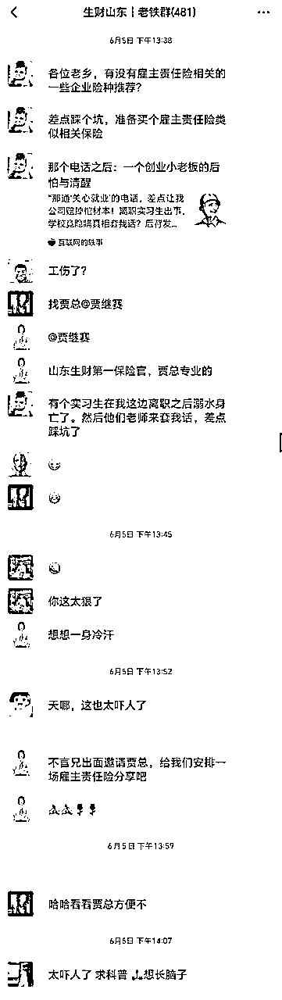
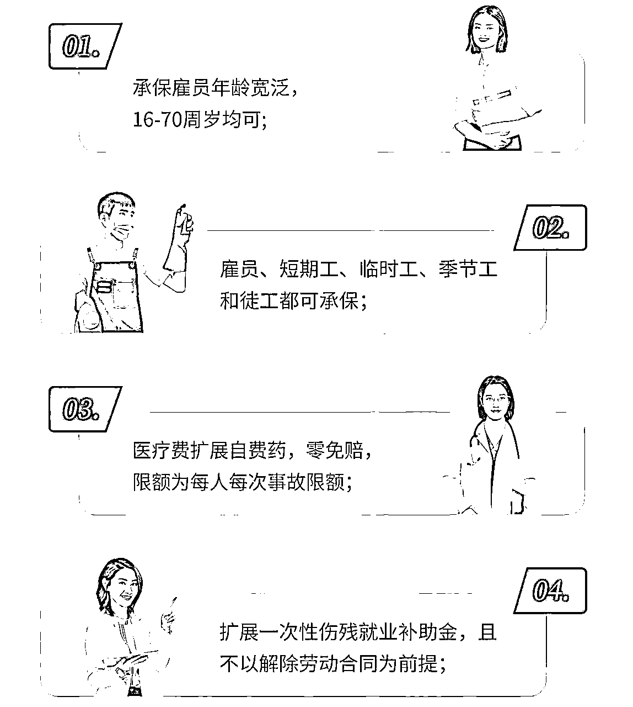
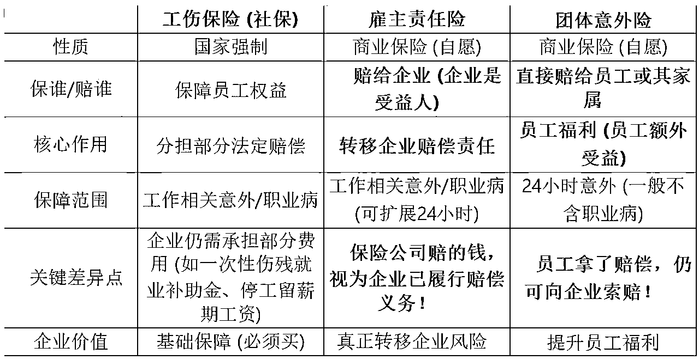
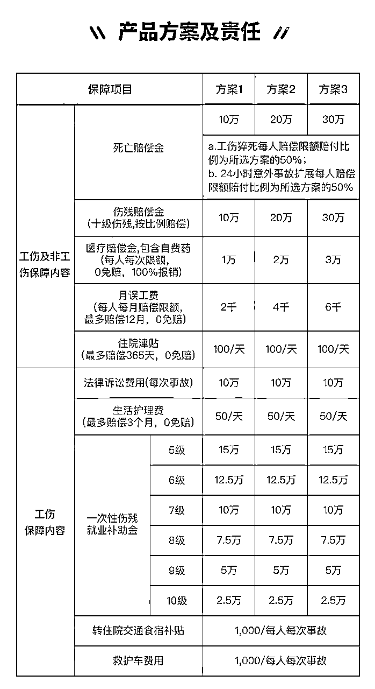
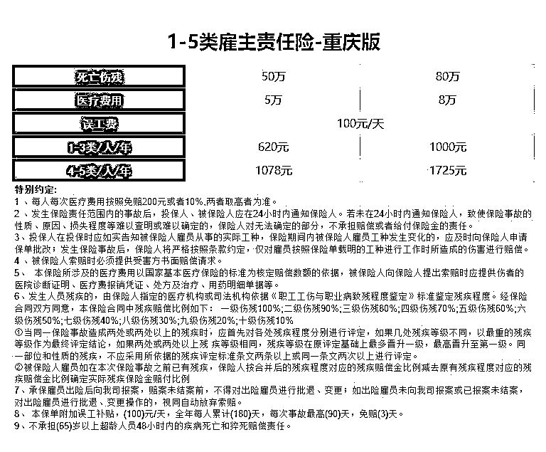
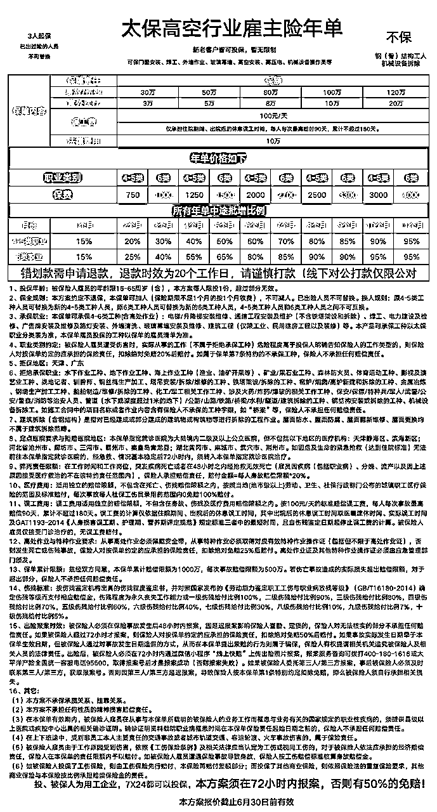
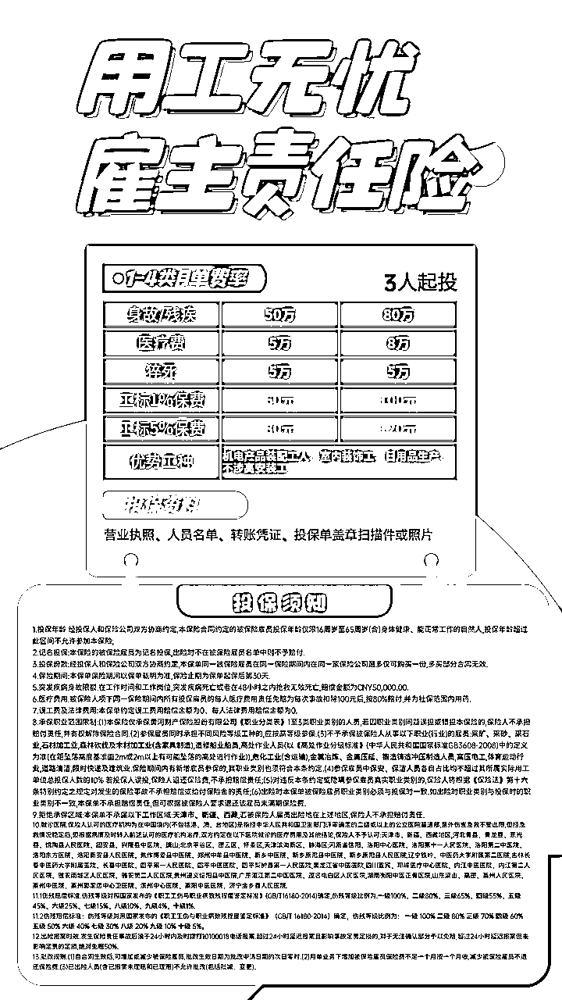
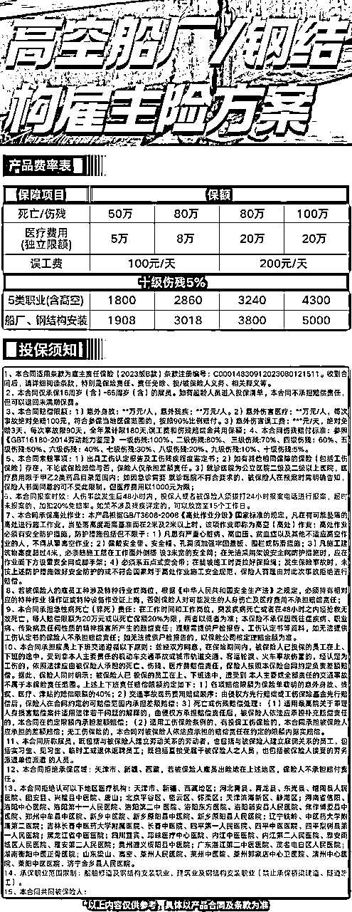
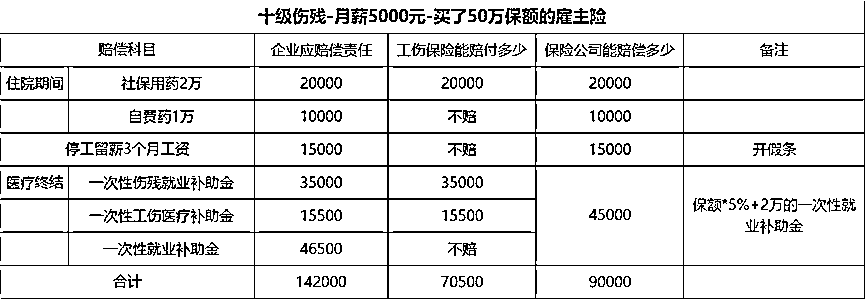

来源：https://qiro1giv4x9.feishu.cn/docx/AGnydd3kxop9u4xlO61cW5SbnGf
生财圈友们大家好，我是贾继赛，2年圈友~职业保险经理人，从事保险行业已经第10个年头了，专注于中立的第三方保险经纪服务，手里有所有保险公司、保险产品和保险服务都是全国优势渠道。累计帮企业客户节省保费200多万，累计帮企业理赔2000多万。
23年4月，通过语文王老师的推荐加入咱们生财，虽然只有2年多的时间，但收获很多，感谢亦仁老师建立的平台，通过生财也认识了很多靠谱伙伴的以及年轻的新朋友，感觉自己的“天灵盖”都被打开了😁
前些天一位圈友在群里吐槽，说公司离职的实习生出事，差点被套话赔掉公司！当时看到真的替恒一老铁没踩坑感到庆幸，同时又感叹会有这么多圈友碰到这方面的难题，而这恰好是我擅长的，是不是可以写一篇文章来科普避坑呢？

于是，在谢总和语文王老师的推荐下写了这篇分享逐字稿，在此同步给咱们生财的圈友们，希望大家可以保护好自己、也保护好自己的企业，少踩坑、别踩坑。
接下来，我会用最简单的方式教会你，雇主责任险是什么？到底保什么？谁最需要买？和工伤保险、团体意外险有啥不一样？投保的时候要注意什么？
顾名思义，雇主责任险是一种责任保险，而且是针对雇主应该承担责任的保险。
雇主有什么责任？
雇主按时发放工资的责任吗？当然不是，发工资问题保险公司解决不了。
它保的是雇主对于员工的责任。
员工意外受伤、伤残、身故、意外医疗等，雇主都要担责任。有责任了，就要对员工进行赔偿。
所以雇主责任险，就是保险公司帮企业赔偿上述责任的险种。
具体包括：医疗费、误工费、伤残赔偿金、死亡赔偿金、打官司的费用等。

所有企业主/管理者： 只要你有雇员，就有潜在用工风险，这是刚需保障。
尤其以下类型企业（劳动密集型、风险较高行业）强烈建议配置：
制造业、建筑业（工人高空作业风险大）
物流运输（司机风险）
安装维修（尤其是空调、钢结构、设备拆除等高空或机械操作工种）
餐饮酒店（后厨、服务易滑倒烫伤）
物业保洁（清洁、维修风险）等
个体工商户： 有小团队的小工厂、店铺老板。
劳务派遣公司： 员工分散在不同地点，风险管控难度大。
临时工、季节工多的企业： 比如电商旺季、农产品加工季，临时用工风险同样需要保障。
员工年龄偏大（如60-70岁）： 这类员工在工伤处理中风险更高，更需要保障。
三者的定位完全不同，可看下图：

有的老板会问：已经有了工伤保险，还需要买雇主责任险吗？
工伤保险是法定强制，必须买。 但它不能覆盖企业需要承担的所有赔偿项目。
一是工伤保险并不能完全转嫁雇主的法律责任，部分赔偿责任特别是评残为四级以下的，用人单位还需承担大部分的赔偿责任，如一次性伤残就业补助金等。因此雇主责任险可作为工伤保险的补充。
二是雇主责任险可覆盖不能参加工伤保险或未能及时参加工伤保险的临时工、学徒、返聘退休人员等。
三是雇主责任险是商业保险，手续较工伤保险简单，赔付速度快捷，减少矛盾摩擦。
四是雇主责任保险保费可进企业生产成本，不挤占企业费用，可税前列支。
就像有了医保，还要买商业医疗险，才能更全面覆盖风险。
定员定名： 投保时确定好每个员工的名字。
优点：人员清晰，理赔相对简单。
缺点： 员工流动性大的公司，增减员要频繁做批改，有点麻烦。适合人员稳定的办公室企业。
定员不定名(不记名/按工种)： 只确定投保人数和工种（如“钢结构安装工10人”）。
优点： 人员流动时，符合条件（同工种、同风险等级）可替换，手续灵活，特别适合建筑工地、安装队、临时工多的企业！
缺点： 理赔时需确认出险人属于投保范围。
常见不赔的情况包括：
员工故意犯罪、自残、醉酒、吸毒导致的伤害。
员工非工作原因做美容整形等手术出问题。
员工参加高风险运动（攀岩、蹦极、职业赛车等）出事。
战争、暴乱、核辐射等。
特别注意： 是否承保高空作业？是否有要求必须佩戴安全措施(如安全带)？未佩戴可能不赔。
行业风险等级： 办公室文职？还是建筑工人？风险越高，保费越高。
员工工种： 同样是制造业，一线操作工和行政人员风险不同，保费可能不同。
保障额度： 身故/伤残保额（如10万、20万、30万、50万、80万、100万）、医疗限额（如1万、2万、3万、10万）选得越高，保费越贵。
投保人数： 人数越多，总保费越高，但人均可能略有优惠。
保障区域： 有些方案对不同省份（如山东、河南、河北、湖北 vs 其他地区）费率也不同。
保险期限： 支持短期（1个月、3个月、6个月）或1年，短期工程也能灵活投保。
接下来，给大家发几个雇主责任险产品的介绍，大家对方案、责任和大概的保费有个了解。
（可点击查看大图）





假设一位员工，因工发生10级伤残，员工平均工资5000元/月，企业已有工伤保险，那么企业还要赔钱吗？

如果企业任何保障都没有，那么企业一共要负担的赔偿大概在14.2万。
如果有工伤保险，能赔偿7.05万，大概能覆盖到50%的支出。
如果没有工伤保险，买了雇主责任险的话，能赔偿到9万，能覆盖60%多的支出。
如果既有工伤、又有雇主险的话，能赔偿到7.05+1（自费药）+1.5（误工费）+2（就业补助金）=11.55万，能覆盖到81%的支出。
当然，以上这个例子是简化以后的，实际过程中要更复杂点，同时各地工伤赔偿标准不同，也会有一些差异。
1、一定要如实告知具体工种、是否涉高
2、一定要提前了解特别约定/投保须知/免责条款(就是我发的那几个产品简介里的小字部分)
3、一定要提前问清十级伤残是赔10%、5%还是1%
4、一定要附加扩展24小时
作为老板，给员工买份保障是责任，给企业买份保障更是智慧。 花小钱，防大风险，让咱们的企业走得更稳、更远。
关于具体方案选择、不同行业、不同工种、不同人数的报价都会不同，关于雇主责任险有任何问题，也可以通过鱼丸来找到我，肯定知不不言，言无不尽！
作为保险经纪人，我始终站在客观、中立的角度，为大家提供适合的保险建议。
今天的文章希望能帮到需要的老板们~最后，祝大家
生 财 有 术 ！